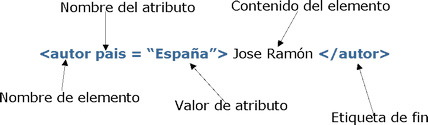
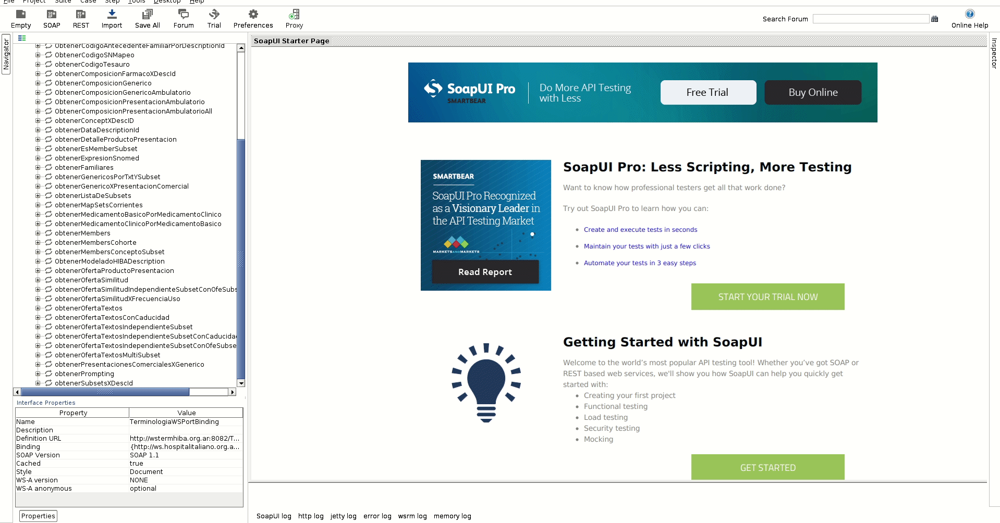

Recursos de presentación de Lenguajes Marcados
Introducción
Durante la siguiente página y sus respectivos links, voy a intentar compartir todos los recursos que pueden llegar a ser de utilidad para consultar post la charla de lenguajes marcados. Se que dejé que la charla divirgiera para diversos temas, haciendo que muchisimas cosas quedaran poco claras, pero al menos me lleve una noción de las diversas dudas que tenian todos los participantes y las diferencias de conocimiento que existen. Igualmente creo que dando por segunda vez la misma charla, casi todas las dudas van a decantar bastante. Y tambien que a partir de estas charlas se puede prepara una clase mas interesante para los próximos ingresantes.
Tema1: XML/HTML
El primer tema que se quizo tratar fue mostrar uno de los lenguajes marcados mas genéricos, con más tiempo y uso, este es XML. Es mas, si nos volvieramos puristas, no deberiamos llamar XML como un lenguae de marcado, sino un "meta-lenguaje que nos permite definir lenguajes de marcado adecuados a usos determinados". HTML (HyperText Markup Language) se define con XML, y debería ser el primer lenguaje de marcado que seguramente todos vieron alguna vez o al menos oyeron hablar de mismo. Lo primero que uno observa en estos lenguajes, es que se definen elementos entre lo que se llaman tags (etiquetas), estos se suelen escribir de la siguiente forma
Este caso define un elemento autor, con contenido "José Ramón", y un atributo pais con valor "España". Un ejemplo muy claro de esto, es como se escribe en HTML una tabla, para esto vamos a usar los siguientes tags que pasamos a definir:
- <table></table>: Estos tags indican que inicia y finaliza una tabla, todo lo que se encuentre entre estos tags tiene que ser parte de la tabla a representar
- <tr></tr>: Table Row, con esta tupla se definen las filas de la tabla
- <td></td>: Este tag representa una celda y se suele usar un par por cada columna de la tabla.
HTML que representa una tabla
Tabla que representa el html definido a la izquierda
| Nombre | Apellido | Edad |
|---|---|---|
| Alguien | UPE | XX |
| Andres | Ramirez | 38 |
Otra propiedad de estos tags es que algunos se puden cerrar en la misma linea sin definir los pares, tan solo poniendo al final del mismo una contrabarra. Por ejemplo para representar un salto de linea en html se suele usar br de la siguiente forma:
<br/>
También vimos SVG como otro lenguaje de marcado que permite representar gráficos, y es el mismo con el cual se contruye el odontograma que esta proximo a salir en la historia clínica. En el siguiente link se puede ver un monton de ejemplos de SVG. Los mismos se pueden modificar en linea y ver el resultado.
Ejemplos SVG
Una de las cosas mas importantes de todo esto es el uso que se le da a XML para compartir información, tal como SVG define un circulo o un rectángulo con los respectivos tags <circle>, <rectangle> y HMTL tablas y párrafos con <table> y <p>. Nosotros podriamos definir cualquier dato que quisieramos compartir, como Pacientes, Turnos, Consultas, etc. Por ejemplo si se quisiera representar con XML los proyectos que la UPE tiene en la hoja de seguimientos se podria hacer de la siguiente forma
El siguiente archivo representaria 10 de los proyectos de la hoja de seguimiento proyectosUpe.xml
Tema2: JSON
Como segundo tema, igual es todo parte de lo mismo, se queria mostrar JSON, que es el lenguaje preferido por las API's y supongo que uno de los mas usados para el intercambio de información. La Wikipedia lo define como:
"JSON (/ˈdʒeɪsən/ JAY-sən), acrónimo de JavaScript Object Notation, es un formato de texto ligero para el intercambio de datos. JSON es un subconjunto de la notación literal de objetos de JavaScript aunque hoy, debido a su amplia adopción como alternativa a XML, se considera un formato de lenguaje independiente."
En JSON existen objetos y listas de objetos, todos los objetos se definen entre los caracteres de llaves { }, y dentro contienen pares del tipo clave valor, y para definir un lista de objetos, se ponen muchos objetos serparados por coma dentro de los caracteres corchetes [ ]. Continuando con el ejemplo del proyecto de la UPE, en JSON se escribiria de la siguiente forma:
La idea de este documento no es que sea autocontenido asique de momento no se va a explicar que es una API ni como funcionan aca, pero con la proxima charla todo deberia quedar mucho más claro
SOAP UI
Bueno finalmente todo esto era para mostrar como consumir terminologia usando SOAP UI. La idea tampoco es explicar aca que es SOAP, ni que es terminología y en todo caso si alguien quiere escribir algo al respecto, luego podemos agregar los vinculos en la seccion de recursos o aca mismo. De momento lo que nos interesa es saber que se puede consumir terminologia del Italiano con este aplicativo y como consumir la misma. Para esto tiene los siguientes dos recuros que corresponden a los servicios de terminologia de test y de produccion respectivamente:
- Test: http://www1.hospitalitaliano.org.ar:8082/TerminologiaWSMultiContextoTest/TerminologiaWSService?wsdl
- Produccion: http://wstermhiba.org.ar:8082/TerminologiaWSMultiContexto/TerminologiaWSService?wsdl
- Proxy Setting: Manual
- Host: 10.200.72.32
- Port: 8080
- Username y Password: los correspondienes a la cuenta de ciudad de cada uno

Finalmente para poder consumir oferta de terminos que se hace con el servicio obetenerOfertaTextos, se necesita contar con un ID de institución, este identifica que institución esta consumiendo terminologia, y el id de subset donde queremos buscar el término. Los datos serian los de la siguiente tabla
| Clave | Valor |
|---|---|
| ID_INSTITUCION | 39261000999136 |
| SUBSET_PROBLEMA | 601000999132 |
| SUBSET_PROCEDIMIENTO | 631000999139 |
| SUBSET_ANTECEDENTE_FAMILIAR | 771000999131 |
| SUBSET_PRACTICA | 20761000999138 |

Recursos
Se pasa a listar diferentes recuros utilizados, tanto para escribir este archivo como para mostrar las diversas cosas utilizadas en la charla
- SOAP-UI:Programa para consumir servicios SOAP, también permite consumir REST (https://www.soapui.org/downloads/soapui.html)
- POSTMAN:Programa para consumir servicios REST (APIs generalmente), generalmente compartimos colecciones de recursos creadas con este programa (https://www.getpostman.com/)
- ScreenCastify:Extensión de chrome que permite crear videos mientras se usa el sistema, útil para tutoriales etc (https://www.screencastify.com/)
- Sublime:IDE utilizado para escribir esta pagina (https://www.sublimetext.com/). Tambien hay otros como Notepad++, etc